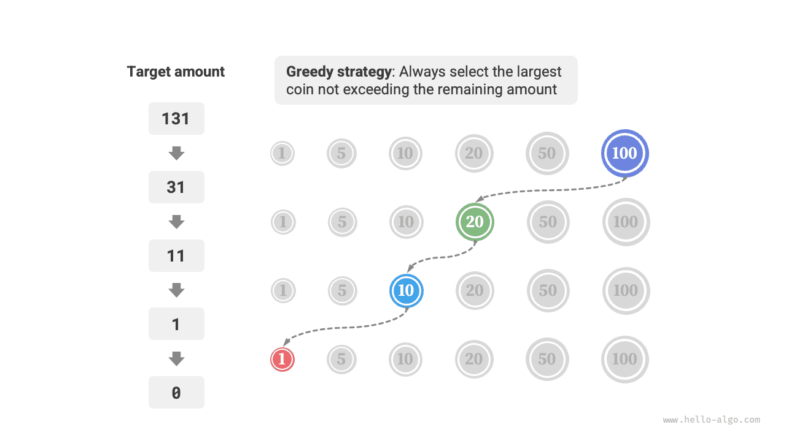

الخوارزميات الجشعة
الخوارزمية الجشعة
الخوارزمية الجشعة (greedy algorithm) أسلوب شائع لحل مسائل التحسين. وتقوم فكرتها الأساسية على اختيار الخيار الذي يبدو الأفضل في كل مرحلة قرار، أي اتخاذ قرارات مثلى محلياً على نحو جشع أملاً في الحصول على حل أمثل عالمياً. والخوارزميات الجشعة بسيطة وفعّالة، وتُستخدم على نطاق واسع في كثير من المسائل العملية.
تُستخدم الخوارزميات الجشعة والبرمجة الديناميكية كلتاهما عادةً لحل مسائل التحسين. ويتشاركان بعض التشابه، مثل اعتمادهما كلَيهما على خاصية البنية الفرعية المثلى، لكنهما يعملان بطريقتين مختلفتين.
- تراعي البرمجة الديناميكية جميع القرارات السابقة عند اتخاذ القرار الحالي، وتستخدم حلول المسائل الفرعية السابقة لبناء حل المسألة الفرعية الحالية.
- لا تراعي الخوارزميات الجشعة القرارات السابقة، بل تتخذ خيارات جشعة متقدمة إلى الأمام، فتقصّر حجم المسألة باستمرار حتى تُحل المسألة.
سنفهم أولاً كيف تعمل الخوارزميات الجشعة من خلال المسألة المثالية «تغيير العملات». وقد قُدّمت هذه المسألة سابقاً في فصل «مشكلة الحقيبة غير المحدودة»، لذا ينبغي أن تكون مألوفة لديك بالفعل.
بمعطى $n$ من أنواع العملات، حيث فئة النوع $i$ هي $coins[i - 1]$، ومبلغ مستهدف $amt$، وعدد غير محدود من العملات من كل نوع، فما أقل عدد من العملات اللازمة لتكوين المبلغ المستهدف؟ وإذا تعذّر تكوين المبلغ المستهدف، فأعد $-1$.
تظهر الاستراتيجية الجشعة لهذه المسألة في الشكل أدناه. بمعطى مبلغ مستهدف، نختار جشعاً العملة التي لا تتجاوزه وتكون الأقرب إليه، ونكرّر هذه الخطوة حتى يتكوّن المبلغ المستهدف.

وشيفرة التنفيذ كما يلي:
Go
/* تغيير العملات: خوارزمية جشعة */
func coinChangeGreedy(coins []int, amt int) int {
// افترض أن قائمة العملات مرتبة
i := len(coins) - 1
count := 0
// كرّر اتخاذ الخيارات الجشعة حتى لا يتبقى أي مبلغ
for amt > 0 {
// ابحث عن العملة الأصغر من المبلغ المتبقي والأقرب إليه
for i > 0 && coins[i] > amt {
i--
}
// اختر coins[i]
amt -= coins[i]
count++
}
// إذا لم يوجد حل ممكن، أعد -1
if amt != 0 {
return -1
}
return count
}
TypeScript
/* تغيير العملات: خوارزمية جشعة */
function coinChangeGreedy(coins: number[], amt: number): number {
// افترض أن مصفوفة العملات مرتبة
let i = coins.length - 1;
let count = 0;
// كرّر اتخاذ الخيارات الجشعة حتى لا يتبقى أي مبلغ
while (amt > 0) {
// ابحث عن العملة الأصغر من المبلغ المتبقي والأقرب إليه
while (i > 0 && coins[i] > amt) {
i--;
}
// اختر coins[i]
amt -= coins[i];
count++;
}
// إذا لم يوجد حل ممكن، أعد -1
return amt === 0 ? count : -1;
}
قد تجد نفسك تهتف: «ما أنظف هذا!». فخوارزمية الجشع تحل مسألة تغيير العملات بنحو عشرة أسطر من الشيفرة فقط.
مزايا الخوارزميات الجشعة وقيودها
الخوارزميات الجشعة ليست مباشرة التطبيق وسهلة التنفيذ فحسب، بل تكون عادةً عالية الكفاءة أيضاً. في الشيفرة أعلاه، إذا كانت أصغر فئة للعملة هي $\min(coins)$، فتُنفَّذ حلقة الاختيار الجشع $amt / \min(coins)$ مرة على الأكثر، فيكون التعقيد الزمني $O(amt / \min(coins))$. وهذا أقل برتبة قدر من التعقيد الزمني لحل البرمجة الديناميكية، وهو $O(n \times amt)$.
غير أنه بالنسبة إلى بعض مجموعات فئات العملات، لا تستطيع الخوارزميات الجشعة إيجاد الحل الأمثل. ويوضح الشكل أدناه مثالين.
- مثال إيجابي $coins = [1, 5, 10, 20, 50, 100]$: مع مجموعة العملات هذه، تستطيع الخوارزمية الجشعة إيجاد الحل الأمثل لأي $amt$.
- مثال مضاد $coins = [1, 20, 50]$: لنفترض $amt = 60$. لا تستطيع الخوارزمية الجشعة إيجاد سوى التوليفة $50 + 1 \times 10$، مستخدمةً $11$ عملة في المجموع، بينما تجد البرمجة الديناميكية الحل الأمثل $20 + 20 + 20$ باستخدام $3$ عملات فقط.
- مثال مضاد $coins = [1, 49, 50]$: لنفترض $amt = 98$. لا تستطيع الخوارزمية الجشعة إيجاد سوى التوليفة $50 + 1 \times 48$، مستخدمةً $49$ عملة في المجموع، بينما تجد البرمجة الديناميكية الحل الأمثل $49 + 49$ باستخدام $2$ عملتين فقط.

بعبارة أخرى، في مسألة تغيير العملات، لا تستطيع الخوارزميات الجشعة ضمان حل أمثل عالمياً، وقد تُنتج حتى نتائج سيئة جداً. وتُحلّ هذه المسألة على نحو أفضل بالبرمجة الديناميكية.
عموماً، تنطبق الخوارزميات الجشعة في الحالتين التاليتين.
- يمكن ضمان الحل الأمثل: في هذه الحالة، تكون الخوارزميات الجشعة غالباً الخيار الأفضل لأنها تميل إلى أن تكون أكثر كفاءة من التتبّع الرجعي والبرمجة الديناميكية.
- يمكن إيجاد حل قريب من الأمثل: تكون الخوارزميات الجشعة مفيدة أيضاً في هذه الحالة. ففي كثير من المسائل المعقدة يكون إيجاد الحل الأمثل عالمياً صعباً جداً، لذا فإن إيجاد حل دون الأمثل بكفاءة يُعدّ نتيجة جيدة جداً.
خصائص الخوارزميات الجشعة
وهنا يطرح السؤال: أي نوع من المسائل يصلح لحله بالخوارزميات الجشعة؟ أو بعبارة أخرى، تحت أي شروط تستطيع الخوارزميات الجشعة ضمان إيجاد الحل الأمثل؟
مقارنةً بالبرمجة الديناميكية، شروط استخدام الخوارزميات الجشعة أكثر صرامة، وتتمحور أساساً حول خاصيتين في المسألة.
- خاصية الاختيار الجشع: لا تستطيع الخوارزميات الجشعة ضمان الحصول على الحل الأمثل إلا عندما تؤدي الخيارات المثلى محلياً دائماً إلى حل أمثل عالمياً.
- البنية الفرعية المثلى: يحتوي الحل الأمثل للمسألة الأصلية على الحلول المثلى للمسائل الفرعية.
قُدّمت البنية الفرعية المثلى بالفعل في فصل «البرمجة الديناميكية»، لذا لن نفصّل فيها هنا. وتجدر الإشارة إلى أن البنية الفرعية المثلى لبعض المسائل ليست واضحة، لكن يمكن حلها مع ذلك بالخوارزميات الجشعة.
نستكشف أساساً طرائق تحديد خاصية الاختيار الجشع. ورغم أن وصفها يبدو بسيطاً نسبياً، فإن إثبات خاصية الاختيار الجشع في الممارسة ليس سهلاً في كثير من المسائل.
فمثلاً في مسألة تغيير العملات، ورغم أنه يمكننا بسهولة تقديم أمثلة مضادة لدحض خاصية الاختيار الجشع، فإن إثبات صحتها أصعب بكثير. وإذا سُئلنا: تحت أي شروط يمكن حل مجموعة عملات معينة بالخوارزمية الجشعة؟ فغالباً لا نستطيع إلا الاعتماد على الحدس أو الأمثلة لتقديم إجابة غامضة، ويصعب تقديم برهان رياضي صارم.
ثمة ورقة بحثية تقدّم خوارزمية بتعقيد $O(n^3)$ لتحديد ما إذا كانت مجموعة عملات معينة يمكن حلها حلاً أمثلاً بالخوارزمية الجشعة لأي مبلغ.
Pearson, D. A polynomial-time algorithm for the change-making problem[J]. Operations Research Letters, 2005, 33(3): 231-234.
خطوات حل المسائل بالخوارزميات الجشعة
يمكن تقسيم العملية العامة لحل المسائل الجشعة إلى الخطوات الثلاث التالية.
- تحليل المسألة: ترتيب خصائص المسألة وفهمها، بما في ذلك تعريف الحالة وأهداف التحسين والقيود. وتظهر هذه الخطوة أيضاً في التتبّع الرجعي والبرمجة الديناميكية.
- تحديد الاستراتيجية الجشعة: تحديد كيفية اتخاذ خيار جشع في كل خطوة. وينبغي لهذه الاستراتيجية أن تقلّص حجم المسألة خطوةً بخطوة وأن تحل المسألة بأكملها في النهاية.
- إثبات الصحة: يلزم عادةً إثبات أن المسألة تمتلك خاصية الاختيار الجشع والبنية الفرعية المثلى معاً. وقد تتطلب هذه الخطوة أدوات رياضية مثل الاستقراء أو البرهان بالتناقض.
تحديد الاستراتيجية الجشعة هو الخطوة الجوهرية في حل هذه المسائل، لكنه قد لا يكون سهلاً في الممارسة، لأسباب رئيسية هي ما يلي.
- تتفاوت الاستراتيجيات الجشعة تفاوتاً كبيراً من مسألة إلى أخرى. ففي كثير من المسائل تكون الاستراتيجية الجشعة بديهية إلى حد كبير ويمكن اشتقاقها بالاستدلال التقريبي والتجريب. أما في بعض المسائل المعقدة فقد تكون الاستراتيجية الجشعة خفية عميقة، مما يختبر بشدة خبرة المرء في حل المسائل وقدرته الخوارزمية.
- بعض الاستراتيجيات الجشعة شديدة الخداع. فقد نصمم استراتيجية جشعة بثقة، ونكتب شيفرة الحل، ونرسلها، ثم نكتشف أن بعض حالات الاختبار تفشل. والسبب أن الاستراتيجية الجشعة المصممة «صحيحة جزئياً» فقط، كما في مثال مسألة تغيير العملات الذي نوقش أعلاه.
لضمان الصحة، ينبغي أن نقدّم برهاناً رياضياً صارماً للاستراتيجية الجشعة، باستخدام البرهان بالتناقض أو الاستقراء الرياضي عادةً.
غير أن البراهين على الصحة قد تكون صعبة أيضاً. وإذا لم يكن لدينا اتجاه واضح، فإننا نلجأ عادةً إلى التنقيح والتحقق من الاستراتيجية الجشعة خطوةً بخطوة عبر اختبارها على حالات الاختبار.
مسائل نموذجية تُحل بالخوارزميات الجشعة
تُطبَّق الخوارزميات الجشعة غالباً على مسائل التحسين التي تحقق خاصية الاختيار الجشع والبنية الفرعية المثلى. وفيما يلي بعض مسائل الخوارزميات الجشعة النموذجية.
- مسألة تغيير العملات: مع توليفات معينة من العملات، تستطيع الخوارزميات الجشعة الحصول دائماً على الحل الأمثل.
- مسألة جدولة الفواصل: لنفترض أن لديك بعض المهام، وتُجرى كل مهمة خلال فترة زمنية، وهدفك إنجاز أكبر عدد ممكن منها. وإذا اخترت دائماً المهمة التي تنتهي أبكر، فتستطيع الخوارزمية الجشعة الحصول على الحل الأمثل.
- مسألة الحقيبة الكسرية: بمعطى مجموعة من العناصر وسعة حمل، هدفك اختيار مجموعة من العناصر بحيث لا يتجاوز الوزن الإجمالي سعة الحمل وتكون القيمة الإجمالية أعظم ما يمكن. وإذا اخترت دائماً العنصر الأعلى نسبة قيمة إلى وزن (القيمة / الوزن)، فتستطيع الخوارزمية الجشعة الحصول على الحل الأمثل في بعض الحالات.
- مسألة تداول الأسهم: بمعطى مجموعة من الأسعار التاريخية للسهم، يمكنك إجراء عمليات تداول متعددة، لكن إذا كنت تملك أسهماً بالفعل فلا يمكنك الشراء مرة أخرى قبل البيع، والهدف الحصول على أكبر ربح.
- ترميز هوفمان: ترميز هوفمان خوارزمية جشعة تُستخدم لضغط البيانات دون فقدان. وبناءً على شجرة هوفمان، حيث يُدمج دائماً العقدتان الأقل تكراراً، تكون شجرة هوفمان الناتجة ذات أقصر طول مسار موزون (طول الترميز).
- خوارزمية ديكسترا: بالنسبة إلى الرسوم البيانية ذات أوزان أضلاع غير سالبة، هي خوارزمية جشعة لحل مسألة أقصر مسار من رأس مصدر معطى إلى جميع الرؤوس الأخرى.